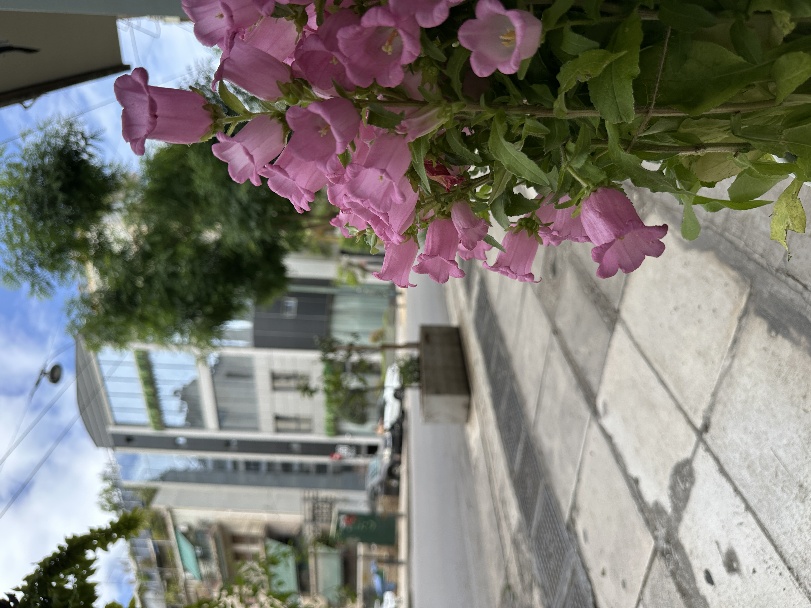

Πού να φάτε
στο Κουκάκι.
Το Κουκάκι είναι η γειτονιά ακριβώς κάτω από την Ακρόπολη — αρκετά κοντά στα αξιοθέατα για να τα φτάσετε με τα πόδια, αρκετά μακριά από το πλήθος ώστε να μοιάζει με την αληθινή Αθήνα. Δείτε πώς θα φάτε καλά σε αυτήν, από ανθρώπους που μαγειρεύουν στη γωνιά της από το 1956.
Η ήσυχη πλευρά της Ακρόπολης
Το Κουκάκι βρίσκεται ακριβώς νότια της Ακρόπολης, ανάμεσα στον βράχο και τις καταπράσινες πλαγιές του λόφου Φιλοπάππου. Για δεκαετίες ήταν μια λαϊκή συνοικία τυπογράφων, ραφτών και δημοσίων υπαλλήλων — και οι ταβέρνες τούς τάιζαν όλους. Όταν το Μουσείο Ακρόπολης άνοιξε το 2009, ο κόσμος ανακάλυψε το Κουκάκι, που έκτοτε έχει ανακηρυχθεί μία από τις πιο βιώσιμες γειτονιές της Ευρώπης.
Αυτό που το κάνει ξεχωριστό για φαγητό είναι ότι ποτέ δεν έγινε τουριστικός δρόμος. Θα βρείτε παλιούς φούρνους και καφενεία δίπλα σε μπαρ φυσικού κρασιού, οικογενειακές ταβέρνες δίπλα σε καφέ τρίτου κύματος — μια γνήσια αθηναϊκή γειτονιά που τυχαίνει να απέχει πέντε λεπτά από το πιο διάσημο μνημείο του κόσμου.

Τι υπάρχει στη γωνία
Μουσείο Ακρόπολης
Το σημείο αναφοράς της γειτονιάς — 5 λεπτά με τα πόδια από το Cookaki. Προγραμματίστε την επίσκεψή σας για αργά το απόγευμα και κατεβείτε για ένα νωρίς ελληνικό δείπνο.
Λόφος Φιλοπάππου
Μονοπάτια με σκιά από πεύκα και η καλύτερη δωρεάν θέα του Παρθενώνα, περίπου 8 λεπτά ανηφόρα. Ιδανικό πριν το μεσημεριανό.
Διονυσίου Αρεοπαγίτου
Ο μεγάλος πεζόδρομος που περικλείει την Ακρόπολη, με μάρμαρο και νεραντζιές — το Κουκάκι ανοίγει κατευθείαν πάνω του.
ΕΜΣΤ & Πλάκα
Το Εθνικό Μουσείο Σύγχρονης Τέχνης απέχει λίγα λεπτά· η ιστορική Πλάκα και το Μοναστηράκι είναι 15 λεπτά με τα πόδια.
Το έντιμο ελληνικό τραπέζι στην Πετμεζά
Αν θέλετε ένα πραγματικά ντόπιο γεύμα στο Κουκάκι, αυτή είναι η πρότασή μας — και είμαστε μεροληπτικοί, αλλά οι θαμώνες το επιβεβαιώνουν. Το Cookaki μαγειρεύει σε αυτή τη γωνιά από το 1956: ελληνικά κλασικά που αλλάζουν κάθε μέρα, όπως μουσακάς, παστίτσιο και σιγομαγειρεμένο κρέας ημέρας, φρέσκο ψάρι από τον Ευβοϊκό, ένα Λαχανικό της Ημέρας φτιαγμένο με την πρωινή λαϊκή, και μια μικρή λίστα από μικρούς Έλληνες οινοπαραγωγούς. Τα κυρίως πιάτα είναι €8–€13, ένα πλήρες γεύμα περίπου €15–€20 το άτομο, και το προσωπικό μιλά ελληνικά, αγγλικά και γαλλικά.
Είμαστε ανοιχτά Δευτέρα–Σάββατο 09:00–16:00 και 19:00–22:00, και Κυριακή συνεχόμενα 10:00–18:00 — που σημαίνει ότι ένα κανονικό μεσημεριανό χωράει εύκολα γύρω από μια επίσκεψη στο μουσείο. Δείτε το πλήρες μενού, διαβάστε την ιστορία μας, ή δείτε γιατί είμαστε εύκολη επιλογή κοντά στην Ακρόπολη.
Πετμεζά 5, 11742 Αθήνα
Τρία λεπτά από το μετρό Ακρόπολη (Γραμμή 2). Καλέστε +30 21 0921 9818 or message +30 698 237 3505.
5 λεπτά με τα πόδια από το Μουσείο της Ακρόπολης
Φαγητό στο Κουκάκι
Πού είναι το Κουκάκι και γιατί φημίζεται για το φαγητό;
Ποιο είναι ένα καλό αυθεντικό εστιατόριο στο Κουκάκι;
Τι υπάρχει να δει κανείς κοντά στο Κουκάκι;
Πηγαίνει κανείς με τα πόδια στο Κουκάκι από την Ακρόπολη;
Φάτε εκεί που τρώει το Κουκάκι.
Κλείστε τραπέζι στην Πετμεζά ή περάστε μετά το μουσείο — θα σας ταΐσουμε όπως τρέφεται η γειτονιά από το 1956.